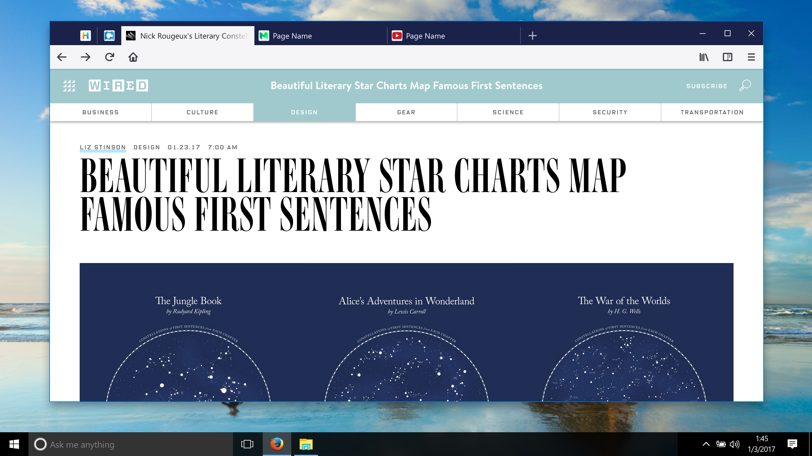
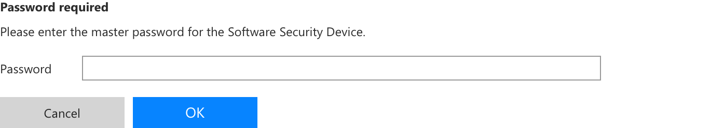
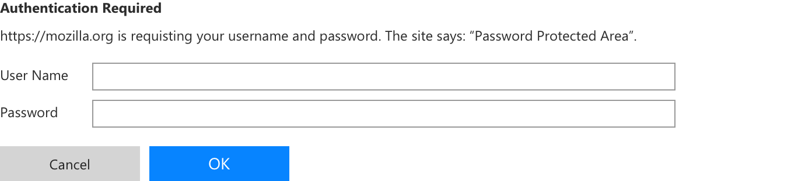

Tab Modal v3
Click on the image to open the modal. Click again to close it.
Master Password

🔒
Wired.com – Nick Rougeux's Literary Constellations

HTTP Authentication
🔒
Wired.com – Nick Rougeux's Literary Constellations
